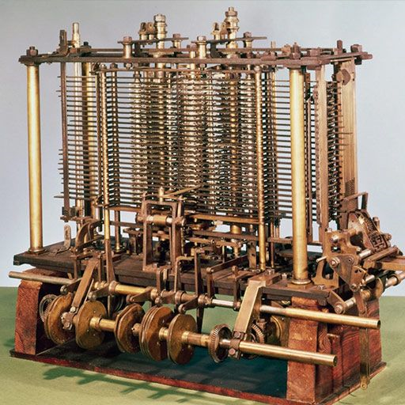

|  |
O século XIX foi um período crucial para o desenvolvimento da computação, marcado por inovações significativas e avanços teóricos que lançaram as bases para a era moderna da tecnologia. Neste período, surgiram tanto projetos visionários quanto dispositivos práticos que moldaram o futuro da computação. Falando mais a respeito da máquina analítica, que seria o primeiro conceito de computador digital do mundo, surgiu ainda no século XIX, criado pelo matemático Charles Babbage. A Máquina Analítica de Charles Babbage foi um marco na história da computação, pois introduziu conceitos fundamentais que viriam a definir os computadores modernos. Uma das inovações mais importantes da Máquina Analítica foi sua capacidade de seguir conjuntos mutáveis de instruções, o que a permitiria realizar diversas funções. Este conceito é o que hoje conhecemos como software. |